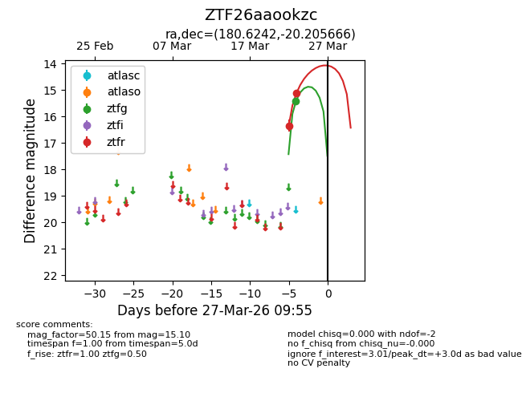
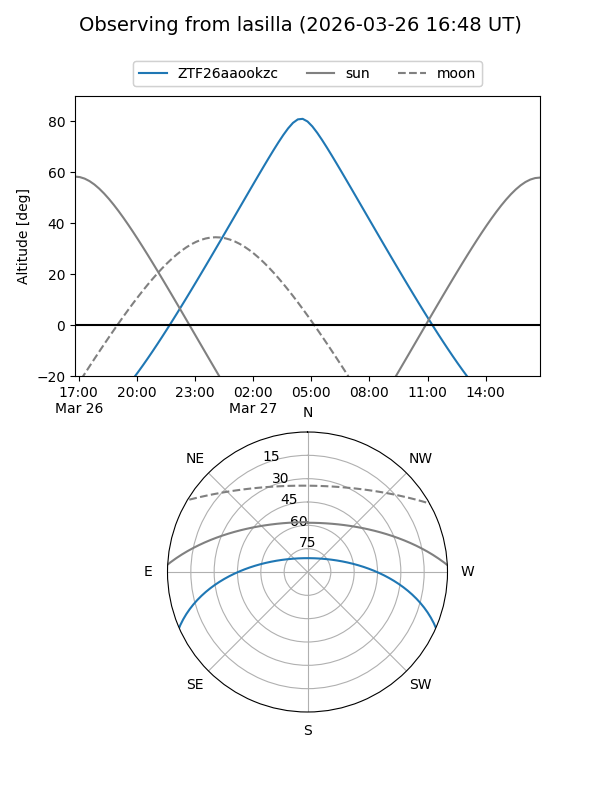
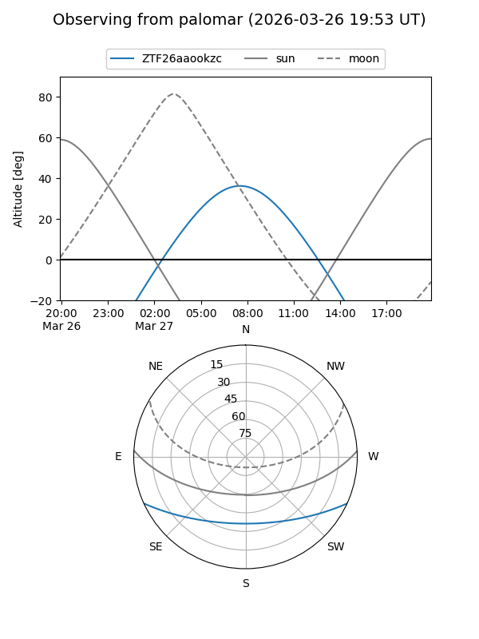
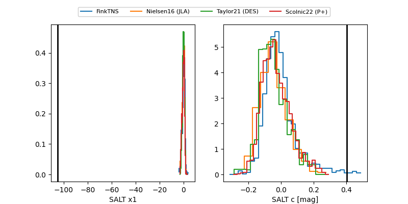

ZTF26aaookzc
Target ZTF26aaookzc at 2026-03-27 09:58
Aliases and brokers:
FINK: link
Lasair: link
ALeRCE: link
alt names
ZTF26aaookzc (ztf,fink_ztf)
Coordinates:
equatorial (ra, dec) = 180.6242,-20.20567
equatorial (HMS+DMS) = 12:02:29.80,-20:12:20.40
galactic (l, b) = (287.6037,+41.20483)
Flags:
Photometry:
last ztfg=15.42, ztfr=15.10
1 ztfg, 2 ztfr detections
Lightcurve

Visibility


Additional plots
